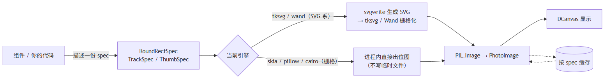
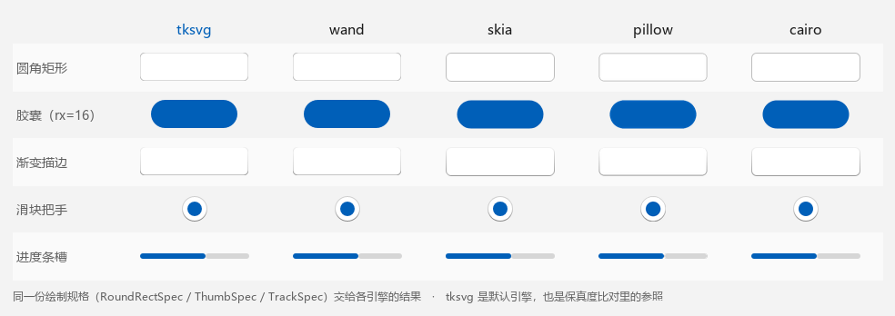
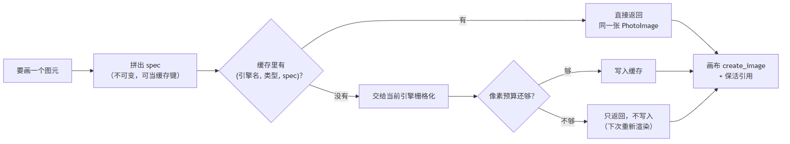
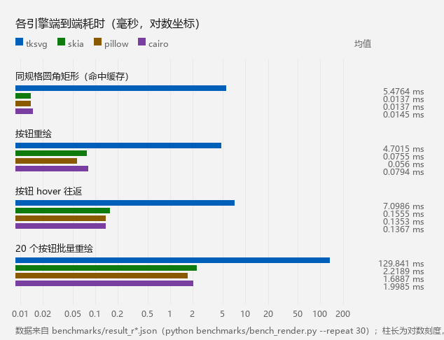

绘制引擎
tkdeft 把"画什么"和"用什么画"分开了。
组件不再直接拼 SVG，而是描述一个 绘制规格（spec）——尺寸、圆角、填充色、 描边色与透明度……然后把它交给当前引擎去栅格化。换引擎不需要改一行业务代码。

同一份规格在各引擎下的实际结果：

tksvg 是默认引擎，也是保真度比对里的参照内置引擎
| 编号 | 引擎 | 类型 | 说明 | 额外依赖 |
|---|---|---|---|---|
| 0 | tksvg |
SVG | 默认。svgwrite 生成 SVG → tksvg 栅格化，保持历史行为 |
无 |
| 1 | wand |
SVG | 经 Wand(ImageMagick) 转 PNG | Wand |
| 2 | skia |
栅格 | skia-python，进程内直接出位图，速度与画质最好 |
pip install tkdeft[skia] |
| 3 | pillow |
栅格 | Pillow 超采样抗锯齿，永远可用 | 无（Pillow 是硬依赖） |
| 4 | cairo |
栅格 | pycairo |
pip install tkdeft[cairo] |
编号是为了兼容历史的 set_renderer(0..4)；新代码推荐直接用引擎名。
切换引擎
from tkdeft.engines import (
set_engine, get_engine, get_engine_name, reset_engine,
list_engines, available_engines, describe_engines,
)
list_engines()
# {'tksvg': True, 'wand': True, 'skia': True, 'pillow': True, 'cairo': True}
available_engines()
# ['tksvg', 'wand', 'skia', 'pillow', 'cairo']
set_engine("skia") # 按名字
set_engine(2) # 或按编号（两种写法等价）
get_engine_name() # -> "skia"
get_engine().kind # -> "raster"
reset_engine() # 恢复默认引擎（tksvg）
describe_engines() 会返回一份结构化的引擎清单，适合直接打印或喂给命令行：
for row in describe_engines():
print(row["index"], row["name"], row["kind"], row["available"],
row["requires"], row["description"], row["aliases"], row["current"])
引擎不可用时 set_engine 会抛 ValueError（而不是静默退回慢路径），
免得你以为开了 skia、其实还在走磁盘；名字拼错则抛
UnknownEngineError（ValueError 的子类），错误信息里会附上"你是不是想用 …"。
get_engine(name, strict=False) 可以退回"名字未知就用当前引擎"的历史行为。
直接渲染一张图
from tkdeft.engines import RoundRectSpec, render, render_roundrect
spec = RoundRectSpec(
width=120, height=32, rx=6,
fill="#ffffff", fill_opacity=1,
outline="#000000", outline_opacity=0.2,
outline_width=1,
)
photo = render_roundrect(spec, master=widget) # -> tkinter.PhotoImage
photo = render(spec, master=widget) # 同一件事：按 spec 类型自动分发
可用的规格有三类，spec.kind 就是它们的类型名：
| 规格 | kind |
用途 |
|---|---|---|
RoundRectSpec |
"roundrect" |
圆角矩形（按钮、面板、输入框背景） |
TrackSpec |
"track" |
滑块/滚动条的进度条槽 |
ThumbSpec |
"thumb" |
滑块/滚动条的圆形把手 |
规格是不可变的（frozen dataclass），因此可以当缓存键，也方便比较和调试：
spec.pixels # 位图像素数（缓存预算按它核算）
spec.to_dict() # 转成普通 dict
spec.describe() # 一行摘要
# 画布 API 习惯用"两个角"描述矩形，可以直接换算
RoundRectSpec.from_box(0, 0, 120, 32, radius=6, fill="#ffffff")
当前引擎是 SVG 系时 render_* 返回 None，表示"这条路径我不参与"，
调用方应当回退到既有的 svgwrite + tksvg 流程。
缓存
渲染结果按 (引擎名, 图元类型, spec) 缓存。因为 spec 是不可变的，
同尺寸同配色的一组控件会共用同一张 PhotoImage。
from tkdeft.engines import (
cache_stats, set_cache_budget, clear_cache, get_cache, DEFAULT_PIXEL_BUDGET,
)
print(cache_stats())
# {'interpreters': 1, 'entries': 62, 'pixels': 169244, 'budget': 8000000,
# 'hits': 178, 'misses': 99, 'hit_rate': 0.642, 'overflow': 0}
set_cache_budget(16_000_000) # 调大像素预算（默认 8_000_000 像素）
clear_cache() # 清空（注意：会清掉已发出的图片引用）
cache = get_cache(widget) # 也可以直接拿某个 Tk 解释器的缓存对象
cache.stats() # 命中率、条目数、溢出次数
缓存不做 LRU 淘汰。原因是 PhotoImage 一旦被回收，
引用它的 canvas item 会变成空白——这是 Tkinter 的经典陷阱。
所以这里采用"像素预算 + 满了就不再写入"：已经发出去的图片永远保持存活，
缓存不下的规格退化为"每次重新渲染"，只损失速度，绝不损坏画面。
cache_stats()["overflow"] 就是"因为超预算而没进缓存"的次数——
如果它一直涨，说明该调大 set_cache_budget() 了。

多窗口 / 反复重建 root 的场景下，每个 Tk 解释器有一份独立缓存，
最多保留 tkdeft.engines.cache.MAX_INTERPRETERS 份，销毁的解释器会被回收。
颜色写法
设计稿里的颜色写法五花八门，三个栅格引擎共用同一套解析规则：
from tkdeft.engines import parse_color, parse_opacity, normalize_hex, to_hex
parse_color("#ffffff", 0.2) # -> (255, 255, 255, 51)
parse_color("#00000080") # -> (0, 0, 0, 128) #RRGGBBAA
parse_color((51, 102, 204)) # -> (51, 102, 204, 255)
parse_color("transparent") # -> None（调用方据此跳过这一层绘制）
parse_opacity("0.7") # -> 0.7
normalize_hex("#FFF") # -> "#ffffff"
to_hex((255, 255, 255, 51)) # -> "#ffffff"
自己写一个引擎
继承 DrawEngine，实现需要的渲染方法，然后注册：
from tkdeft.engines import DrawEngine, register_engine, unregister_engine
class MyEngine(DrawEngine):
name = "myengine"
kind = "raster" # 只有 raster 会走快速路径
requires = ("mylib",) # 用于 available() 探测
description = "我的自定义引擎"
def render_roundrect(self, spec):
# 返回 PIL.Image（RGBA）即可
...
def render_track(self, spec):
...
def render_thumb(self, spec):
...
register_engine(MyEngine(), aliases=("9", "mine"))
unregister_engine("myengine") # 不想要了就摘掉
requires里的模块探测不到时，available()返回False，set_engine("myengine")会报错并说明缺什么；- 只想实现一部分图元也没关系：没实现的那些方法保持基类的
NotImplementedError，engine.supports("track")会返回False； engine.info()返回该引擎的结构化描述（编号、类型、依赖、描述）。
引擎渲染失败不会让界面挂掉：tkdeft.engines 会回退到 SVG 路径、
记录最后一次错误并（对每个引擎只）警告一次：
from tkdeft.engines import last_engine_error, clear_engine_error
last_engine_error() # -> "skia: ValueError: ..." 或 None
clear_engine_error() # 清掉记录，允许下次失败时重新警告
换引擎能快多少
同一份工作，几个引擎的端到端耗时（本机实测，数据来自 benchmarks/result_r*.json）：

一句话结论：规格重复度越高、重绘越频繁，换栅格引擎的收益越大。 怎么自己跑出这张图，见 回归与性能。
坐标与描边约定
所有 spec 的坐标都以自身左上角为 (0, 0)，并且描边是居中的：
几何会被向内收缩半个线宽，使描边的外沿正好贴合图片边缘。
这正是历史上出问题的地方——旧代码把矩形放在 (0.5, 0.5) 却仍用整宽整高，
描边中心线正好压在画布边界上，于是外侧那半个线宽被裁掉。
tkdeft.svg.roundrect_geometry() 用同一套规则计算 SVG 几何，
保证 SVG 引擎与栅格引擎画面一致：

「没有颜色」的写法在两条路径上是一致的
栅格引擎接受 None / "transparent" 表示"这一层不画"，
而 svgwrite 的属性校验器只认 "none"。tkdeft.svg.svg_paint()
统一了这件事，所以 RoundRectSpec(outline=None) 在 5 个引擎上都能跑。
渐变里的"透明"由 gradient_stop() 转换成「黑色 + stop-opacity=0」。
引擎能力差异
| 差异 | 说明 |
|---|---|
| 抗锯齿 | 栅格引擎与 tksvg 有亚像素差异，因此默认引擎仍是 tksvg |
| 椭圆圆角 | Pillow 的 rounded_rectangle 只接受一个半径，ry 会被忽略；skia / cairo / SVG 都支持 rx != ry |
| 成本 | SVG 引擎每帧要生成文件并解析 XML；栅格引擎进程内出图，再叠加缓存后接近零成本 |